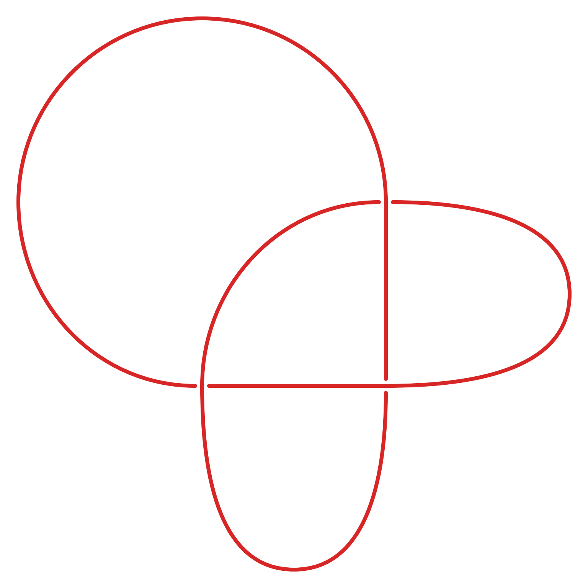
starter
Trefoil — SnapPy diagram
Three crossings.
SnapPy diagrams, blackboard photographs, and iPad drawings. Choose Open… in Knot Studio to load a picture. Start with one of the SnapPy diagrams.
Example guide · Sources and permissions

Three crossings.
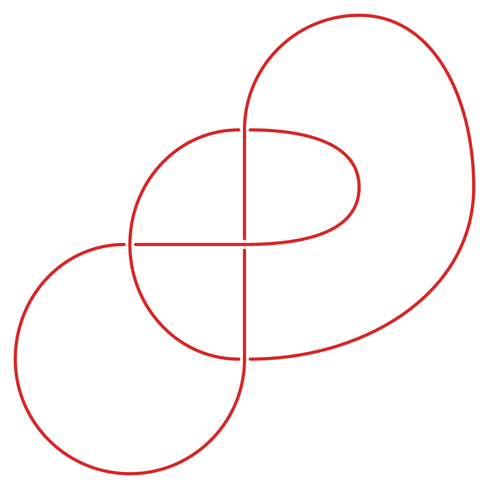
Four crossings.
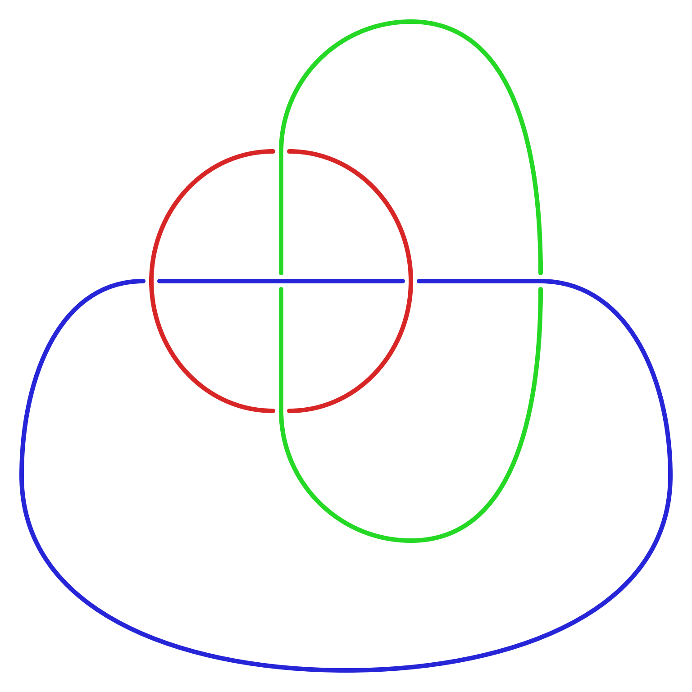
Six crossings and three components.
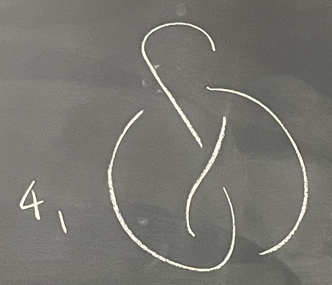
Chalk texture, wide crossing gaps, and an external handwritten label.
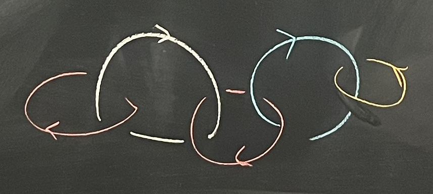
Colored chalk and orientation arrows.
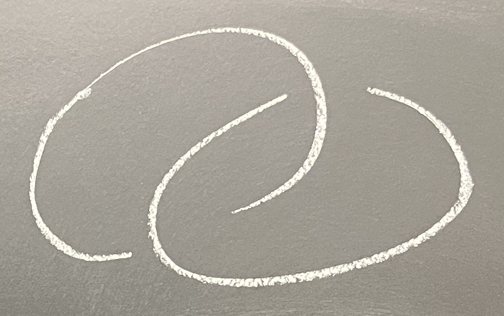
An uncluttered chalk example with a broad crossing gap.
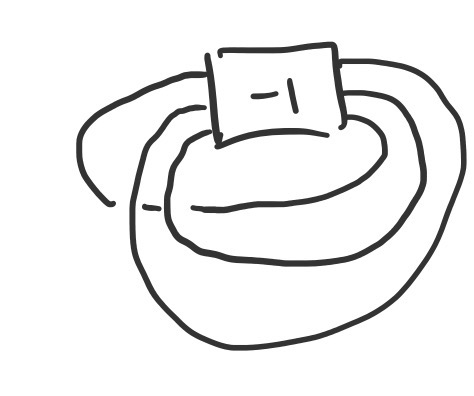
A -1 twist box on three strands with two exterior crossings.
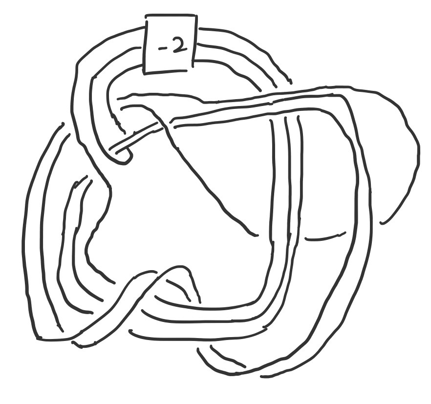
A -2 twist box and underpassing strokes omitted across an entire strand bundle.
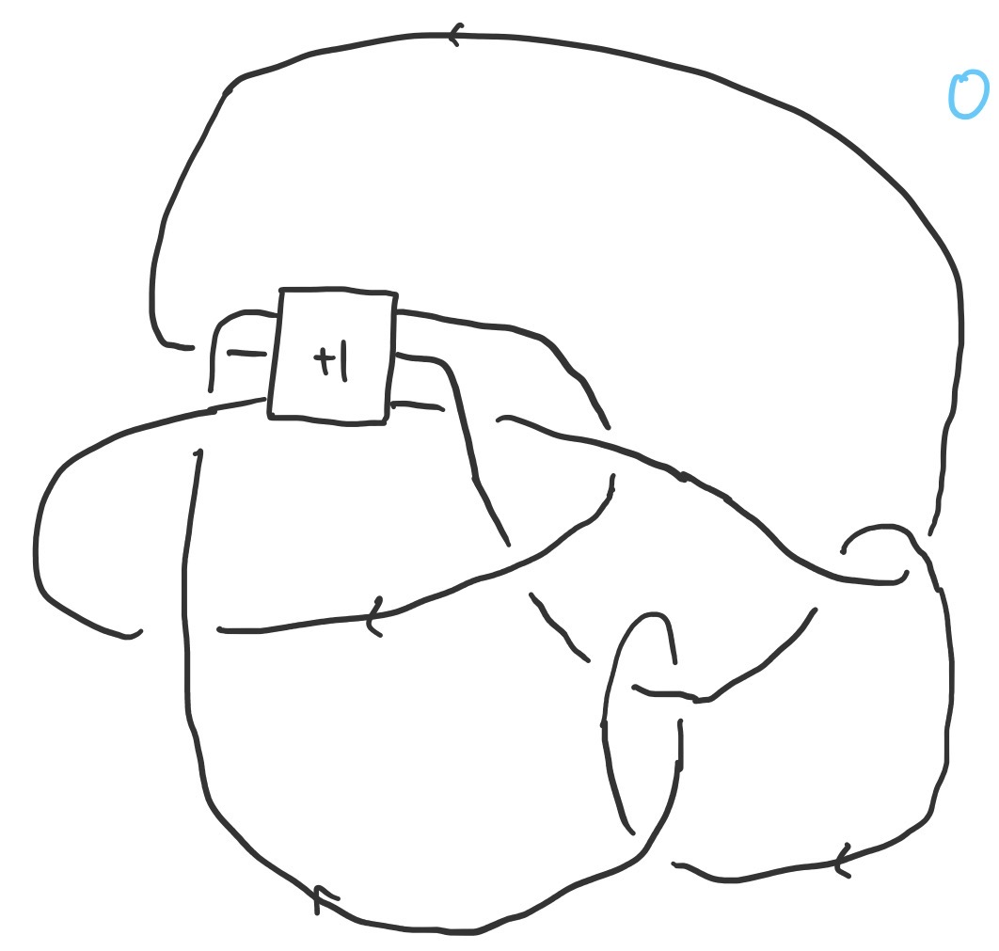
A +1 twist box on three strands, orientation arrows, and a blue 0 label. Delete the marked label before recognition.
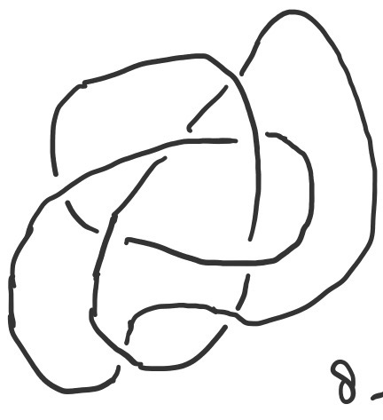
A monochrome drawing with a small handwritten label near the lower edge.
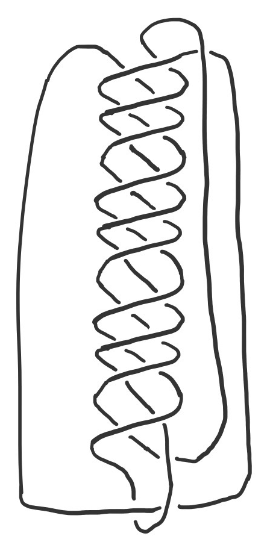
Repeated close crossings.